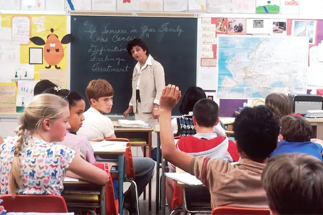
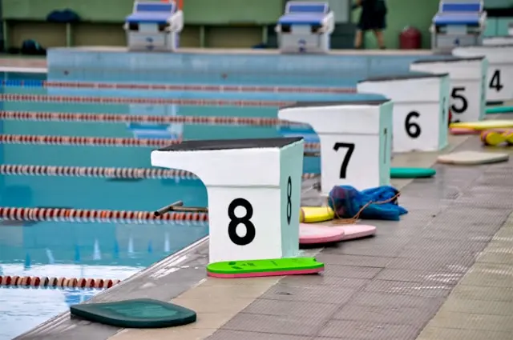

Sekolah Ngoding Mastery merupakan sebuah Lembaga Pendidikan yang berfokus pada Pegembangan Kreativitas seorang Peserta Didik yang meliputi Kreativitas dalam Design, maupun Logical Thinking.
Lihat Tentang KamiSekolah Ngoding Mastery merupakan sebuah Lembaga Pendidikan yang sudah dibangun sebelum terjadinya Virus COVID-19, lebih tepatnya pada tahun 2017, kemudian mulai beroperasi pada tahun 2022, yang dimana berkomitmen untuk mengembangkan Kreativitas seorang Peserta Didik diera Teknologi ataupun Artificial Intelegence.

Mengembangkan kemampuan berpikir kritis, berkomunikasi, dan memahami dunia sekitar.

Memahami dan melatih keterampilan, dan mengembangkan kemampuan berpikir.
Mengembangkan kemampuan berpikir kreatif, mengekspresikan diri, dan rasa percaya diri.
Tujuan PPDB adalah untuk memastikan penerimaan peserta didik baru berjalan secara objektif, transparan, akuntabel, non diskriminatif, dan berkeadilan.
Link PPDB